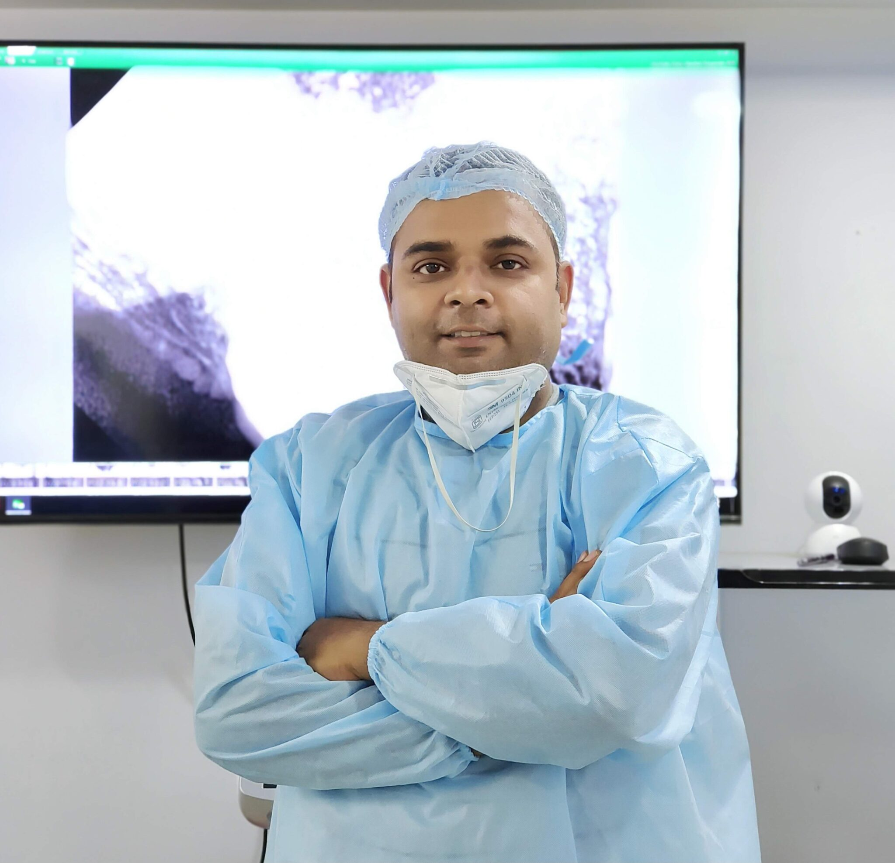

Smile Design
A considered approach to a brighter, naturally beautiful smile.
A little care.
A lifetime of smiles.
Expert dental care with a gentle, personal touch.
For your health, your confidence, and the smile
that’s uniquely yours.
From everyday care to a complete smile transformation,
our treatments are guided by expertise and shaped
around you.
A considered approach to a brighter, naturally beautiful smile.
Restore your smile. Rediscover everyday confidence.
Precision-led treatment to preserve your natural teeth.
Thoughtfully aligned teeth, for a smile that feels like you.
Gentle, attentive care for every member of your family.
Healthy foundations for a smile that lasts.

Behind every treatment is a person. And behind every smile is a story. At Happi Smiles, we take the time to listen, understand and care for both.
Dr. Harpreet Singh brings specialist expertise in conservative dentistry and endodontics, with a thoughtful approach to preserving natural teeth and helping you feel at ease.
BDS, MDS · Conservative Dentistry & Endodontics
Your concerns matter. We begin with a conversation, not a treatment plan.
Honest advice, considered options and clear explanations. So you can choose with confidence.
A healthy smile is an ongoing relationship. We focus on lasting health, not just today’s treatment.
A few things you might be wondering.
For anything else, we’re just a call away.
Your first visit starts with a conversation about your concerns, followed by a dental examination. We explain our findings, discuss suitable treatment options and answer your questions before you decide on the next step.
Yes. Let us know if you feel nervous about dental treatment. We take time to explain each step, listen to your concerns and help you feel more comfortable throughout your visit.
You can call us on +91 70197 25870 or send an appointment request on WhatsApp. Our team will confirm an available date and time with you.
You will find us at S-95, Bhoothnath Market, Sector 5, Indira Nagar, Lucknow, Uttar Pradesh 226016. The clinic is open Monday to Sunday, 10 AM to 9 PM.
A friendly conversation. A thoughtful plan. A healthier you.